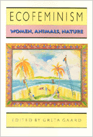

<body bgcolor="#FFFFFF" text="#000000" link="#0000FF" vlink="#CC0000" alink="#CC0000"><center><hr width="350" size="1" align="center" noshade>Feminist scholars and activists explore the relationships among humans, animals, and the natural environment<hr width="350" size="1" align="center" noshade><p><a href="https://cdcshoppingcart.uchicago.edu/Cart/ChicagoBook.aspx?ISBN=9780877229889&&PRESS=temple" target="_top">Buy this book!</a> | <a href="https://cdcshoppingcart.uchicago.edu/Cart/Cart.aspx?PRESS=temple" target="_top">View Cart</a> | <a href="https://cdcshoppingcart.uchicago.edu/Cart/Cart.aspx?PRESS=temple" target="_top">Check Out</a></p><p></p></center><!--none//--><h1>Ecofeminism</h1>
<h3>edited by Greta Gaard</h3>
<P>cloth 0-87722-988-0 $66.50, Jan 93, <FONT COLOR=#990033>Out of Stock Unavailable</FONT>
<br>paper 0-87722-989-9 $33.95, Jan 93, <FONT COLOR=#990033>Available</FONT>
<br>Electronic Book 1-43990-548-7 $33.95 <FONT COLOR=#990033>Out of Stock Unavailable</FONT>
<BR> 304 pp
6x9
</P><BLOCKQUOTE><I>"The essays...are a stimulating and welcome addition to this burgeoning body of critical thought."</I>
<br>&#151<b><I>Canadian Woman Studies</I></b><I></I></BLOCKQUOTE>
<p>Drawing on the insights of ecology, feminism, and socialism, ecofeminism's basic premise is that the ideology that authorizes oppression based on race, class, gender, sexuality, physical abilities, and species is the same ideology that sanctions the oppression of nature. In this collection of essays, feminist scholars and activists discuss the relationships among human begins, the natural environment, and nonhuman animals. They reject the nature/culture dualism of patriarchal thought and locate animals and humans within nature. The goal of these twelve articles is to contribute to the evolving dialogue among feminists, ecofeminists, animal liberationists, deep ecologists, and social ecologists in an effort to create a sustainable lifestyle for all inhabitants of the earth.
<p>Among the issues addressed are the conflicts between Green politics and ecofeminism, various applications of ecofeminist theory, the relationship of animal liberation to ecofeminism, harmful implications of the romanticized woman-nature association in Western culture, and cultural limitations of ecofeminism.
<BR>&nbsp;<h2>Excerpt</h2><P>Excerpt available at <a href="http://www.temple.edu/tempress">www.temple.edu/tempress</a></p>
<BR>&nbsp;<h2>Contents</h2><P>
<p>Preface
<br>1. Living Interconnections with Animals and Nature &#150 Greta Gaard
<br>2. Ecofeminism: Linking Theory and Practice &#150 Janis Birkeland
<br>3. Dismantling Oppression: An Analysis of the Connection Between Women and Animals &#150 Lori Gruen
<br>4. Roots: Rejoining Natural and Social History &#150 Stephanie Lahar
<br>5. Ecofeminism and the Politics of Reality &#150 Linda Vance
<br>6. Questioning Sour Grapes: Ecofeminism and the United Farm Workers Grape Boycott &#150 Ellen O'Loughlin
<br>7. Animal Rights and Feminist Theory &#150 Josephine Donovan
<br>8. The Feminist Traffic in Animals &#150 Carol J. Adams
<br>9. For the Lover of Nature: Ecology and the Culture of the Romantic &#150 Chaia Heller
<br>10. From Heroic to Holistic Ethics: The Ecofeminist Challenge &#150 Marti Kheel
<br>11. A Cross-Cultural Critique of Ecofeminism &#150 Huey-li Li
<br>12. Ecofeminism and Native American Cultures &#150 Pushing the Limits of Cultural Imperialism? &#150 Greta Gaard
<br>Selected Bibliography
<br>About the Contributors
<br>Index
</P><BR>&nbsp;<H2>About the Author(s)</H2>
<P><b>Greta Gaard</b> is Assistant Professor of Composition and Women's Studies at the University of Minnesota, Duluth.</P>
<P>Contributors: Janis Birkeland, Lori Gruen, Stephanie Lahar, Linda Vance, Ellen O'Loughlin, Josephine Donovan, Carol J. Adams, Chaia Heller, Marti Kheel, and Huey-li Li, and the editor.</P>
<BR><H2>Subject Categories</H2>
<p><A HREF="/tempress/women.html" TARGET="_top">Women's Studies</a>
<BR><A HREF="/tempress/nature.html" TARGET="_top">Nature and the Environment</a>
</p>
<BR><h2 class="inpageheading">In the series</H2>
<P><I><a href="http://www.temple.edu/tempress/ethics_action.html" onMouseOver="window.status='Click for other books in this series!'; return true;" onMouseOut="window.status=''; return true;" target="_top">Ethics and Action</a></i>, edited by Tom Regan.
</p><p>No longer active.</p>
<p align="center"><a href="https://cdcshoppingcart.uchicago.edu/Cart/ChicagoBook.aspx?ISBN=9780877229889&&PRESS=temple" target="_top">Buy this book!</a> | <a href="https://cdcshoppingcart.uchicago.edu/Cart/Cart.aspx?PRESS=temple" target="_top">View Cart</a> | <a href="https://cdcshoppingcart.uchicago.edu/Cart/Cart.aspx?PRESS=temple" target="_top">Check Out</a></p><p><font face="Arial" size="1"><a href="copyright.html" onMouseOver="window.status='Web Copyright Policy';return true;" onMouseOut="window.status=''" title="Web Copyright Policy">&copy;</a> 2015 <a href="http://www.temple.edu" target="new" onMouseOver="window.status='Link to Temple University home page';return true;" onMouseOut="window.status=''" title="Link to Temple University home page">Temple University</a>. All Rights Reserved. http://www.temple.edu/tempress/titles/948_reg.html</font></p>